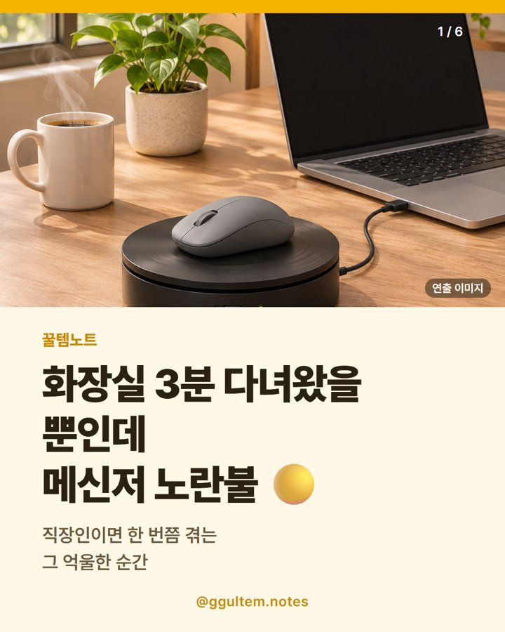

마우스 무버 추천 — 화장실 3분에 노란불? 받침형 vs USB형 고르는 법 (베이디어 M4)
2026.11.09 작성 · 2026.11.10 수정 · 꿀템노트
마우스 무버는 받침형(마우스를 올려 두는 방식)인지 USB형인지, ON/OFF 스위치가 있는지, 쓰려는 PC에서 외부 장치가 허용되는지를 보고 고르면 돼요.
(쿠팡 파트너스 링크)

이미지는 이해를 돕기 위한 일러스트이며 실제 상품과 다를 수 있어요.
화장실 3분 다녀왔더니 노란불? 마우스 무버가 뭐예요
화장실 3분, 커피 타러 탕비실, 택배 받으러 1층, 옆자리랑 잠깐 수다, 프린터 앞 대기, 재택 중 빨래 널기. 직장인이라면 한 번쯤 겪는 "잠깐 자리 비웠을 뿐인데" 순간이에요. 그때마다 화면이 꺼지거나 잠기면 괜히 억울하죠.
마우스 무버(마우스 지글러)는 컴퓨터가 "마우스가 움직였다"고 인식하게 해서 화면이 꺼지거나 절전으로 들어가는 걸 줄이려는 용도의 작은 장치예요. 이번에 소개하는 받침형은 마우스를 받침 위에 올려 두면 받침 휠이 살살 돌면서 마우스를 슬쩍슬쩍 움직여 주고, 그래서 커서가 꿈틀꿈틀해요. 물리적으로 움직이는 방식이라 상품 페이지에는 설치 프로그램이 없다고 안내돼 있어요.
이 글은 화제 뉴스가 아니라 '마우스 무버 추천', '마우스 지글러 추천'처럼 찾는 분이 많은 질문을 중심으로 정리했어요.
마우스 무버 고르는 법 — 받침형 vs USB형
| 비교 항목 | 받침형 | USB형 |
|---|---|---|
| 움직이는 방식 | 마우스를 올려 두면 받침 휠이 마우스를 움직이는 방식(이 글의 상품) | USB 포트에 꽂아 컴퓨터가 마우스로 인식하게 하는 방식(일반적인 분류, 제품별 안내 확인) |
| 설치 | 상품 페이지에 설치 프로그램 없음으로 안내 | 제품마다 달라 상세 정보 확인 |
| 필요한 것 | 광학 마우스, USB 또는 어댑터 전원(상품 페이지 표기) | USB 포트(USB-A/USB-C 규격 확인) |
| 책상 자리 | 마우스 올릴 받침 자리가 필요해요 | 포트에 꽂는 작은 크기 |
| 확인할 점 | 내 마우스가 광학식인지, ON/OFF 스위치가 있는지 | 회사 PC는 USB 장치 허용 여부 |
마우스 무버, 회사에서 써도 될까?
회사 PC는 외부 장치 사용이 제한될 수 있으니 보안·근무 규정을 먼저 확인하세요.
이 글은 상품 페이지에 표기된 사양만 소개하며, 성능이나 감지 여부는 보장하지 않아요.
마우스 무버 가격은?
표의 가격은 2026.11.09 기준이며 옵션에 따라 다르고 변동 가능해요. 가격과 재고는 쿠팡 상품 페이지에서 다시 확인하세요.
| 항목 | 이 글의 상품(베이디어 M4) | 비고 |
|---|---|---|
| 게시일 기준 가격 | 7,670원 (2026.11.09 기준, 옵션에 따라 다름, 변동 가능) | 정가 표기 26,800원 |
| 모델 | FM2081 | 상품 페이지 표기 |
| 방식 | 받침형(마우스 움직임 시뮬레이션) | 상품 페이지 표기 |
| 스위치 | ON/OFF 스위치 | 상품 페이지 표기 |
| 다른 유형 ①: USB형 | 상품 페이지에서 확인 | 가격과 구성이 제품마다 달라요 |
| 다른 유형 ②: 앱 연동형 | 상품 페이지에서 확인 | 같은 카테고리 검색 결과에서 가격 범위가 넓어요 |
쿠팡 검색 결과에서는 가격과 구성이 제품마다 크게 달라, 방식(받침형/USB형)과 스위치 표기를 같이 비교하는 편이 좋아요. 다른 유형은 링크를 따로 두지 않았어요.
이런 분께 / 이런 분은 다른 선택
상품 페이지에 표기된 사양만 보고 정리했어요. 직접 사용한 경험이 아니며 성능을 보증하지 않아요.
- 이런 분께: 마우스를 올려 두는 받침형 마우스 무버를 찾는 분
- 이런 분께: 개인 PC에서 화면 꺼짐·절전을 줄이고 싶은 분
- 다른 선택: 광학식이 아닌 마우스를 쓰는 분은 호환 여부를 먼저 확인하세요.
- 다른 선택: 화면 꺼짐 시간은 운영체제의 전원·절전 설정으로도 조절할 수 있어요.
함께 보면 좋은 글: 가습기 추천 가격 비교 · 고르는 법 · 삼립 단팥호빵 10봉 보관·조리 확인법 · 워셔블 전기요 추천 · 탄소매트 가격 비교
이번에 소개하는 상품
베이디어(Vaydeer) 마우스 무버 M4 (모델 FM2081)
상품 페이지에는 마우스 움직임 시뮬레이션, ON/OFF 스위치, 광학 마우스용, USB 또는 어댑터 전원, 설치 프로그램 없음이 표기돼 있어요. 성능이나 감지 여부를 보증하는 내용은 아니에요.
자주 묻는 질문
마우스 무버는 어떤 장치인가요?
컴퓨터가 마우스가 움직였다고 느끼게 해 화면 꺼짐이나 절전 진입을 늦추려는 장치예요. 받침형은 마우스를 올려 두면 받침이 마우스를 움직이는 방식이에요.
마우스 무버 사용법은 어렵나요?
받침형은 마우스를 받침 위에 올리고 USB 또는 어댑터로 전원을 연결해 ON으로 켜는 방식이라고 상품 페이지에 안내돼 있어요. 정확한 사용법은 상세 정보를 확인하세요.
마우스 무버를 회사에서 써도 되나요?
회사 PC는 외부 장치 사용이 제한될 수 있으니 규정을 먼저 확인하세요. 위 보안 항목을 참고하세요.
마우스 무버 가격은 얼마인가요?
이 글에서 소개한 상품은 2026.11.09 기준 7,670원이며 옵션에 따라 다르고 변동될 수 있어요. 상품 페이지에서 다시 확인하세요.